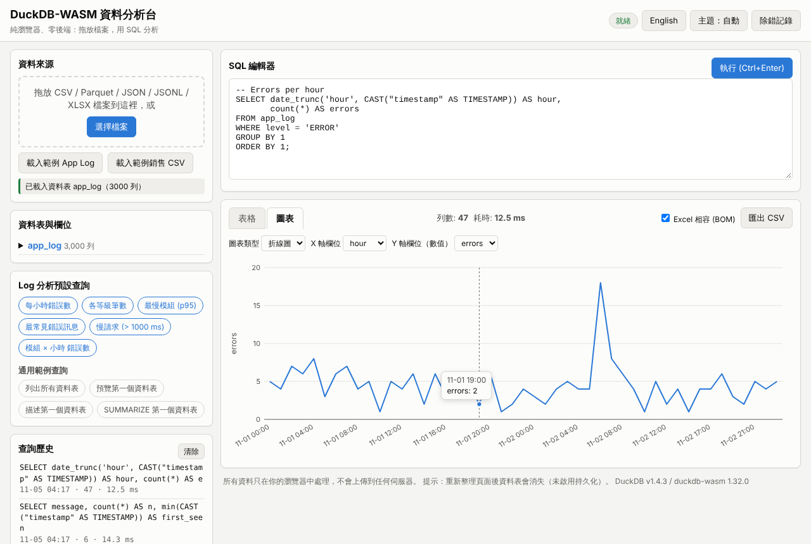
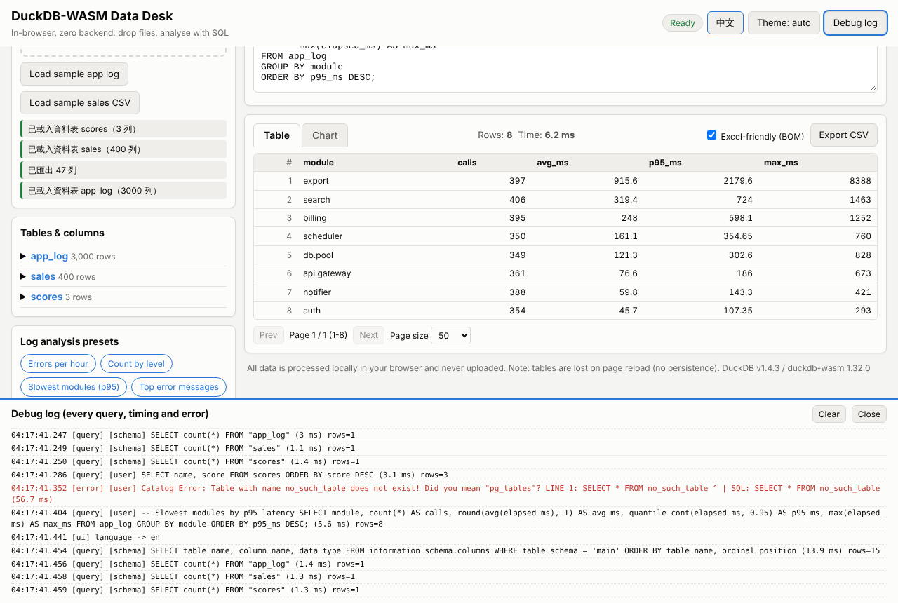
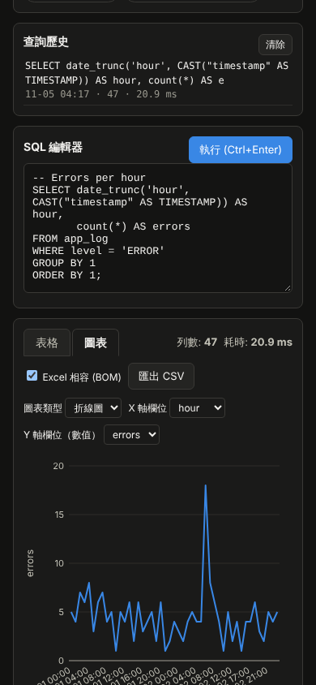

概覽
這是一個完全在瀏覽器內執行的資料分析工具，使用 DuckDB-WASM（@duckdb/duckdb-wasm 1.32.0，內含 DuckDB v1.4.3）。資料不會上傳到任何伺服器；本機伺服器 server.js 只負責提供靜態檔案。
- 拖放或選擇 CSV / TSV / JSON / JSONL / NDJSON / XLSX / Parquet 檔案，自動建立資料表（檔名轉為表名，例如
app-log.jsonl→app_log）。 - SQL 編輯器：Ctrl+Enter 執行（若有選取文字則只執行選取部分），Tab 縮排。
- 結果表格：分頁（25/50/100/500）、列數、查詢耗時、NULL 標示。
- 快速圖表：長條圖 / 折線圖（手寫 SVG，滑鼠移過顯示數值）。
- 資料表與欄位面板、查詢歷史（存於瀏覽器 localStorage）、範例查詢、匯出 CSV（可選 Excel 相容 BOM）。
- Log 分析預設：每小時錯誤數、各等級筆數、最慢模組 (p95)、最常見錯誤訊息、慢請求、模組 × 小時錯誤數。
- 介面語言：繁體中文（預設）與 English，右上角切換；主題：自動 / 淺色 / 深色；手機寬度可用。
- 除錯記錄面板（每個查詢、耗時、錯誤），
?debug=1同時輸出console.debug。

快速開始
Windows（繁體中文 Windows + Chrome）
- 安裝 Node.js 18 以上版本（建議 22 LTS）。
- 雙擊
start-windows.bat。它會切換到程式所在資料夾、呼叫start-windows.ps1。 - 第一次執行時會自動
npm install與npm run build（下載約 140 MB 的 npm 套件，複製 wasm 到public\vendor\）。 - 伺服器啟動後自動開啟瀏覽器
http://127.0.0.1:8703/。關閉命令視窗或按 Ctrl+C 即停止。
參數：start-windows.ps1 -Port 9000 -LogDir D:\logs -NoBrowser
Linux / macOS / 手動
npm install npm run build # 複製 duckdb-wasm 的 wasm/worker 到 public/vendor/，產生 dist/artifact.html npm start # node server.js → http://127.0.0.1:8703/ # 或 ./start.sh（自動 build 並開啟瀏覽器）
伺服器參數
| 參數 | 環境變數 | 預設值 |
|---|---|---|
--port | PORT | 8703（0 = 隨機） |
--host | HOST | 127.0.0.1（區網分享用 0.0.0.0） |
--log-dir | LOG_DIR | Windows：%ProgramData%\NewMiscCode\03-duckdb-wasm-dashboard；其他：./logs |
--root | public | |
--open | 啟動後開啟瀏覽器 | |
--quiet | 不在主控台印出每個請求 |
部署到任何靜態主機
npm run build 後，把整個 public/ 資料夾（含 vendor/）上傳到任何靜態主機（GitHub Pages、IIS、nginx…）即可。主機需以 application/wasm 提供 .wasm（多數主機預設如此；不正確時 DuckDB 仍會退回較慢的載入方式）。不需要 COOP/COEP 標頭。
使用說明
- 載入資料：把檔案拖到頁面任何地方（或左上「資料來源」區塊），或按「選擇檔案」。也可以按「載入範例 App Log」（3000 筆，48 小時）或「載入範例銷售 CSV」。範例檔也在
public/sample/。 - 查看結構：「資料表與欄位」列出每個表的列數；展開可看欄位與型別；點表名直接執行
SELECT * ... LIMIT 100；點欄位名插入到編輯器游標處。 - 寫 SQL：在編輯器輸入 DuckDB SQL，按「執行」或 Ctrl+Enter。錯誤訊息顯示在結果區並寫入除錯記錄。
- 作圖：切到「圖表」分頁，選擇圖表類型、X 軸欄位、Y 軸數值欄位。預設查詢會自動帶入合適的設定。最多繪製前 500 列。
- 匯出：「匯出 CSV」匯出完整結果（不只目前頁）。勾選「Excel 相容 (BOM)」時檔案開頭加 UTF-8 BOM，讓繁中 Windows 的 Excel 直接開啟不亂碼。
- 歷史：每次成功執行的 SQL 會存到歷史（最多 50 筆，存在此瀏覽器），點一下載回編輯器。
Log 分析
Log 檔需為 JSON Lines（每行一個 JSON 物件），欄位：timestamp（如 2026-11-01 08:15:23.123 或 ISO 格式）、level（DEBUG/INFO/WARN/ERROR）、module、message、elapsed_ms。把檔名取為 app-log.jsonl（或載入後 CREATE TABLE app_log AS SELECT * FROM 你的表），預設查詢按鈕就會啟用。
{"timestamp":"2026-11-01 00:00:52.112","level":"INFO","module":"billing","message":"invoice created","elapsed_ms":171,"request_id":"req-186a0","user_id":12}
支援格式
| 格式 | 處理方式 | 需網路？ |
|---|---|---|
| CSV / TSV / TXT | DuckDB read_csv_auto（自動偵測分隔符、型別、時間） | 否 |
| JSON / JSONL / NDJSON | 在 JS 中解析（陣列、單一物件、或每行一筆），轉 CSV 後由 DuckDB 偵測型別；巢狀物件存成 JSON 字串 | 否 |
| XLSX / XLS | SheetJS 0.18.5（首次使用時載入），每個工作表一個資料表 | 否（本機版） |
| Parquet | DuckDB read_parquet；DuckDB-WASM 1.32 未內建 parquet 擴充，會自動從 extensions.duckdb.org 下載 | 是 |
驗證步驟（同事可照做）
A. 自動測試
npm install npm test # = node scripts/build.mjs && node test/e2e.mjs npm run audit:text # 文字檔稽核：UTF-8、無 BOM（.ps1 例外）、無 U+FFFD、.bat 純 ASCII
test/e2e.mjs 會：啟動 server.js（隨機埠）→ 以 Playwright Chromium 開頁面（?debug=1）→ 用檔案選擇器載入 public/sample/app-log.jsonl → 執行全部 6 個預設查詢並檢查列數 > 0 → 在 Node 中獨立計算期望值，比對「每小時錯誤數」每一列、「各等級筆數」、「最常見錯誤訊息」及各查詢列數 → 繪製折線圖與長條圖並檢查點數/長條數、滑鼠提示 → 分頁 → 匯出 CSV 並比對內容與 BOM → 載入 CSV 與 XLSX（含中文）→ 錯誤 SQL 的顯示與記錄 → 切換英文再切回 → 手機寬度 (390px) 深色主題無水平捲動 → 以攔截請求的方式把 jsDelivr 指向 node_modules，測試 dist/artifact.html → 檢查伺服器 JSONL 記錄與 .wasm MIME → 任何 console error 都算失敗。截圖存到 examples/。
需要 Playwright：若專案內沒有安裝，測試會使用全域安裝的 playwright（npm root -g）。沒有時請 npm i -D playwright && npx playwright install chromium。
B. 手動驗證（約 3 分鐘）
- 執行
start-windows.bat（或npm start），開啟http://127.0.0.1:8703/?debug=1。右上狀態顯示「就緒」，頁尾顯示DuckDB v1.4.3 / duckdb-wasm 1.32.0；下方除錯記錄出現DuckDB ready。 - 把
public\sample\app-log.jsonl拖進頁面。左側出現app_log 3,000 列，展開可見timestamp TIMESTAMP。 - 按「每小時錯誤數」：列數 47；切到「圖表」看到折線圖，在 11-02 06:00 附近有明顯高峰（範例資料故意在第 30–32 小時注入 db.pool / billing 錯誤）。
- 按「各等級筆數」：INFO 1625、DEBUG / WARN / ERROR 其餘，合計 3000。
- 按「最常見錯誤訊息」：第一列為
payment provider declined request，47 次。 - 按「慢請求」：128 列，分頁顯示「頁 1 / 3」，按「下一頁」。
- 按「匯出 CSV」，用 Excel 開啟，中文與時間正常。
- 按右上「English」，介面切成英文；再按「中文」切回。按「主題」循環自動/淺色/深色。
- 輸入
SELECT * FROM nope執行：結果區顯示紅色錯誤，除錯記錄有紅色[error]行。 - 打開 Chrome DevTools（F12）→ Console 無紅色錯誤；Network 可看到
vendor/duckdb-eh.wasm為application/wasm。 - 檢查伺服器記錄：
%ProgramData%\NewMiscCode\03-duckdb-wasm-dashboard\requests-YYYY-MM-DD.jsonl。
參考截圖


架構與打包
03-duckdb-wasm-dashboard/ ├─ server.js 零相依靜態伺服器（MIME、JSONL 請求記錄、--open） ├─ start-windows.bat/.ps1 Windows 啟動（bat 純 ASCII → ps1 UTF-8 BOM → node server.js） ├─ start.sh Linux/macOS 啟動 ├─ public/ 網站根目錄（可直接放到任何靜態主機） │ ├─ index.html │ ├─ css/app.css 主題變數（淺/深色）、RWD │ ├─ js/i18n.js zh-TW / en 字串 │ ├─ js/samplegen.js 決定性範例資料產生器（瀏覽器與 Node 共用） │ ├─ js/chart.js 手寫 SVG 長條/折線圖 │ ├─ js/app.js 主程式（DuckDB 初始化、載入檔案、查詢、表格、匯出、除錯記錄） │ ├─ sample/ app-log.jsonl、sales.csv（build 產生並提交） │ └─ vendor/ ← npm run build 產生（不提交） ├─ scripts/build.mjs 打包 duckdb-browser.mjs + apache-arrow 為 IIFE、複製 wasm/worker、產生 dist/artifact.html ├─ scripts/audit-text.mjs 文字檔稽核 ├─ dist/artifact.html 單一 HTML（CDN 版，提交） ├─ test/e2e.mjs Playwright 端對端測試（npm test） └─ examples/ 截圖
為什麼 wasm 不提交
duckdb-eh.wasm 約 32.7 MB、duckdb-mvp.wasm 約 37.5 MB，超過 10 MB 門檻，因此 public/vendor/ 列在 .gitignore，由 npm install && npm run build 從 npm 套件產生。版本鎖定在 package.json（精確版本）與 package-lock.json。
DuckDB 載入方式
- 使用手動 bundle 設定（MVP 與 EH 兩組，由
duckdb.selectBundle依瀏覽器能力選擇；Chrome 使用 EH）。不使用 COI（多執行緒）版本，因此不需要 COOP/COEP 標頭。 duckdb-browser.mjs依賴apache-arrow，build 時用 esbuild 打包成單一 IIFE（約 220 KB，全域變數duckdb），本機版與 Artifact 版共用同一份。- Worker 一律以 blob URL 建立：
importScripts(<worker 絕對網址>)，因此同源（本機）與跨源（jsDelivr）走完全相同的程式路徑。 - 查詢設定
castBigIntToDouble、castDecimalToDouble，避免 BigInt / Decimal 在 JS 中的顯示問題。
JSON 為何在 JS 中解析
DuckDB-WASM 1.29 以後 json 與 parquet 擴充不再靜態連結，第一次使用 read_json_auto 時會從 extensions.duckdb.org 下載。為了在離線環境、公司代理、以及 claude.ai Artifact 的沙箱中都能運作，JSON/JSONL 改在 JS 中解析並轉成 CSV，由 DuckDB 核心的 CSV 偵測器推斷型別（時間戳記會被識別為 TIMESTAMP）。
持久化
未實作 OPFS 持久化：重新整理頁面後資料表會消失（查詢歷史、語言、主題會保留在 localStorage）。
除錯與記錄
- 頁面除錯記錄：右上「除錯記錄」切換。記錄每個查詢（含內部的載入與結構查詢）、耗時、列數、錯誤、圖表繪製、匯出、語言切換、DuckDB 初始化與 bundle 選擇。最多保留 2000 筆。
- URL 旗標
?debug=1：預設開啟面板，並把每筆記錄與 DuckDB 內部 logger 輸出到console.debug（Chrome DevTools Console 選 Verbose 層級才看得到）。 - DevTools：
window.__ddbDebug是記錄陣列；window.DDB.runQuery(sql)、DDB.runPreset('errors_per_hour')、DDB.state可直接使用。不使用任何阻擋 DevTools 的技巧，原始碼未混淆（只有 vendor 的 duckdb bundle 是壓縮過的）。 - 其他 URL 參數：
?lang=en強制語言。 - 伺服器記錄：每個請求寫一行 JSON 到
<log-dir>/requests-YYYY-MM-DD.jsonl，欄位ts, method, path, status, bytes, ms, ip, ua。Windows 預設%ProgramData%\NewMiscCode\03-duckdb-wasm-dashboard，其他系統./logs；可用--log-dir或LOG_DIR更改。無法寫入時只警告一次，不影響服務。
Artifact 版本（dist/artifact.html）
dist/artifact.html 由 scripts/build.mjs 從 同一份 public/index.html、CSS 與 JS 產生：所有 CSS/JS（包括 duckdb + arrow 的 IIFE bundle）都內嵌，只在最前面加上 window.DDB_CONFIG = {mode:"cdn", ...}。CDN 模式下，wasm 與 worker 從https://cdn.jsdelivr.net/npm/@duckdb/duckdb-wasm@1.32.0/dist/ 載入，SheetJS 從 https://cdn.jsdelivr.net/npm/xlsx@0.18.5/dist/xlsx.full.min.js 載入。檔案約 290 KB，可直接發佈為 claude.ai Artifact 或用瀏覽器開啟。
測試狀況：開發容器無法連到 jsDelivr，因此 e2e 測試以 Playwright 攔截 cdn.jsdelivr.net 請求、改由 node_modules 中相同版本的檔案回應，並把頁面放在另一個網域（跨源）下執行：初始化、載入範例、執行預設查詢皆通過。真實 jsDelivr 與 claude.ai 的 CSP（例如是否允許 blob worker 與 wasm 下載）未能在此實測。
限制與疑難排解
- 狀態一直是「正在載入」或顯示「DuckDB 初始化失敗」：確認已執行
npm run build（public/vendor/存在）；開啟?debug=1看除錯記錄；檢查 Network 中 wasm 是否 200。 - Parquet 載入失敗：需要能連到
extensions.duckdb.org（DuckDB 自動下載 parquet 擴充）。公司網路封鎖時可先把 Parquet 轉成 CSV。 - 大檔案：所有資料都在瀏覽器記憶體中（WASM 32 位元，約 4 GB 上限，實際建議 < 1 GB）。JSON 會先在 JS 中整份解析，數百 MB 的 JSON 會較慢。
- XLSX：以 SheetJS 轉 CSV，公式取計算後的值；日期會依 SheetJS 格式輸出。
- 圖表：單一數列，最多 500 列；需要更複雜的圖請匯出 CSV。
- 無持久化：重新整理後需重新載入檔案。
- 埠被占用：
start-windows.ps1 -Port 8710或node server.js --port 8710。 - PowerShell 執行原則：
start-windows.bat以-ExecutionPolicy Bypass呼叫 ps1，不需修改系統設定。
English summary
Zero-backend, in-browser data analysis with DuckDB-WASM (@duckdb/duckdb-wasm 1.32.0, DuckDB v1.4.3). Drop CSV / JSON / JSONL / XLSX / Parquet files to create tables, query them with SQL (Ctrl+Enter), page through results, draw bar/line charts, export CSV, browse schema and query history, and use the log-analysis presets on the sample app log.
npm install npm run build # copies wasm/worker into public/vendor/ (not committed: ~33-38 MB each), builds dist/artifact.html npm start # http://127.0.0.1:8703/ (?debug=1 for console.debug tracing, ?lang=en) npm test # Playwright end-to-end test, screenshots in examples/ npm run audit:text
- Windows: double-click
start-windows.bat(installs and builds on first run, then opens the browser). - Server request log (JSONL): Windows
%ProgramData%\NewMiscCode\03-duckdb-wasm-dashboard, else./logs; override with--log-dir/LOG_DIR. - JSON is parsed in JS and converted to CSV so it works offline: DuckDB-WASM 1.32 downloads the json/parquet extensions from extensions.duckdb.org on demand. Parquet therefore needs network access.
dist/artifact.htmlis a single self-contained HTML generated from the same sources; it loads wasm + worker from jsDelivr. It was tested with jsDelivr requests intercepted and served from node_modules (the real CDN is blocked in the build container).- No OPFS persistence: tables are gone after reload (history, language and theme persist in localStorage).